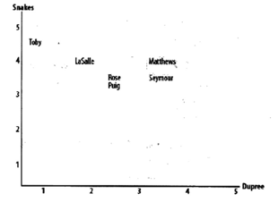
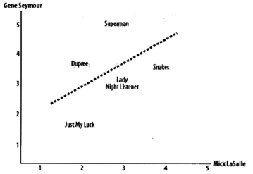
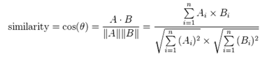
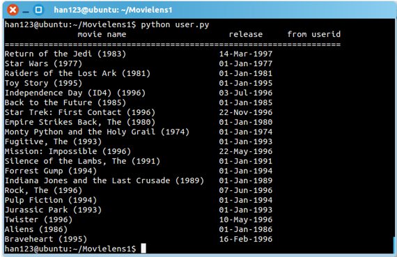

社交媒体的基于协同过滤的推荐系统
推荐系统
如今，推荐系统已经在多方面得到应用，例如淘宝、当当、亚马逊等网站的商品推荐。而个性化推荐系统则是通过发掘用户的兴趣爱好，做出针对性的推荐。个性化推荐的方法较多，最常用的是协同过滤方法，而本次实验主要讲的也是基于协同过滤的个性化推荐。
协同过滤
协同过滤（Collaborative Filtering）是现今推荐系统中应thumb 推荐系统之协同过滤概述用最为成熟的一个推荐算法系类，它利用兴趣相投、拥有共同经验之群体的喜好来推荐使用者感兴趣的资讯，个人透过合作的机制给予资讯相当程度的回应（如评分）并记录下来以达到过滤的目的进而帮助别人筛选资讯。
协同过滤的基本假设是如果用户x和y对n个项目的评价或行为是相似的，那么他们对其他项目所持有的观点也是相似的，即行为相似的用户兴趣也可能相似。
一个协同过滤算法的基本方法是对大批用户进行搜索，从中找出兴趣相似的用户群。算法会对这些人的所偏爱的内容进行考察，然后构造出推荐列表，推荐给该群体的用户。
Python 语言
Python是一种解释型、面向对象、动态数据类型的高级程序设计语言，具有跨平台、简单实用、扩展性强等特性，数据结构也非常灵活。
Python俗称胶水语言，其语法简洁，类库很多，适合快速开发程序。适合做爬虫抓取数据和社交网络分析。
Python有很多版本，这次用的版本是python3.2。
传统相似度测量方法
寻找有相似兴趣的用户
寻找有相似兴趣的用户方式是比较各用户的评价数据，计算用户间的相似度。主要方法有两种即欧几里得距离和皮尔逊相关度。
欧几里得距离
使用欧几里得距离计算用户的相似度时，将用户评价的物品作为坐标轴，用户填充到坐标体系中。以二维为例

Snakes和Dupree为电影，Toby，Lasclle等人对应的点根据其评分情况被画在相应的位置。这样两者在偏好空间中的距离越近，他们的兴趣就越相似。而此模型可以推广至多维情况。
Pearson相关度评价
Pearson相关系数是根据两组数据与某一直线的拟合程度来衡量的。

此坐标系以用户为坐标轴，用户所评分的电影显示在对应位置。本方法可修正结果，增强准确性。例如TOM, Lily对电影A，B，C的评分为(2, 4.1, 4), (3, 5, 5 )，则用pearson方法得到两者相似度仍然较高，而欧几里得距离法得到的相似度则偏低。
余弦距离相似性
鉴于两个向量的属性， A 和B的余弦相似性θ用一个点积形式来表示其大小，如下所示：

产生的相似性范围从-1到1：-1意味着两个向量指向的方向正好截然相反，1表示它们的指向是完全相同的，0通常表示它们之间是独立的，而在这之间的值则表示中度的相似性或相异性。
本系统创新点来源
- 根据心理学家分析，人们乐于接受认识的人推荐的东西
- 根据心理学家分析，关系亲密的人也是因为兴趣相同，所以好友推荐引起的兴趣高
- 本系统认为，并不是所有好友都有相同兴趣，例如有心理学家指出，性格或兴趣爱好互补的人也可能成为好朋友,但是兴趣爱好有所不同。本系统有所简化这一情况
本系统创新性改进方法
- 首先判断用户之间有没有好友关系存在
- 互加好友用户的用户，计算关系权值，（User-based Connection Weight Score (CWS)）
- 可能成为好友关系权值（User-based Prospective Connection Weight Score (PCWS) ）
- 将关系权值（CWS/PCWS）考虑在内的相似度计算
- 根据相似度的高低找出K个（Top-K ）与目标用户最相似的邻居（Nearest neighbor search ）
- 在邻居喜欢的物品中，根据邻居与目标用户的远近程度算出每一件物品的推荐度
- 根据每一件物品的推荐度高低给目标用户推荐物品。
... 访问链接(updating)
系统可视化效果

根据相似度排名直接可以得到最好的推荐效果